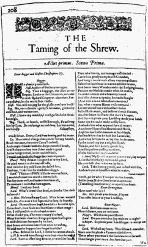

Enter Katharina

Petruchio
Good morrow, Kate; for that's your name, I hear.
Katharina
Well have you heard, but something hard of hearing:
They call me Katharina that do talk of me.
Petruchio
You lie, in faith; for you are call'd plain Kate,
And bonny Kate and sometimes Kate the curst;
But Kate, the prettiest Kate in Christendom
Kate of Kate Hall, my super-dainty Kate,
For dainties are all Kates, and therefore, Kate,
Take this of me, Kate of my consolation;
Hearing thy mildness praised in every town,
Thy virtues spoke of, and thy beauty sounded,
Yet not so deeply as to thee belongs,
Myself am moved to woo thee for my wife.
Katharina
Moved! in good time: let him that moved you hither
Remove you hence: I knew you at the first
You were a moveable.